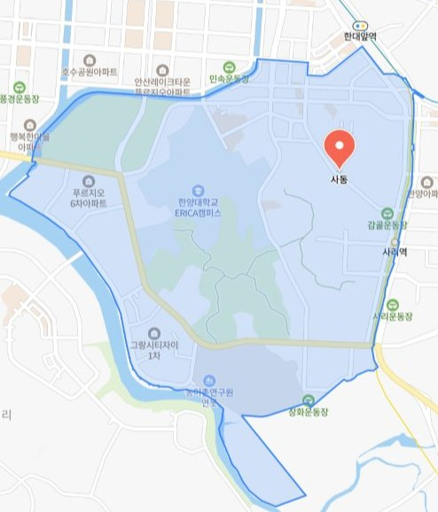
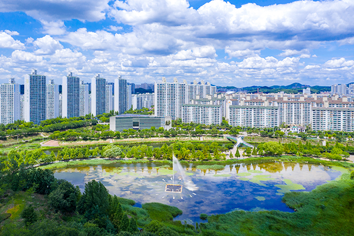
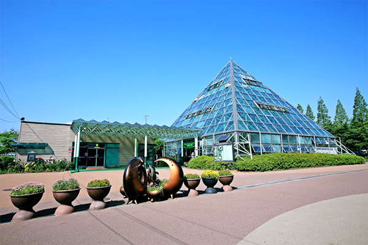
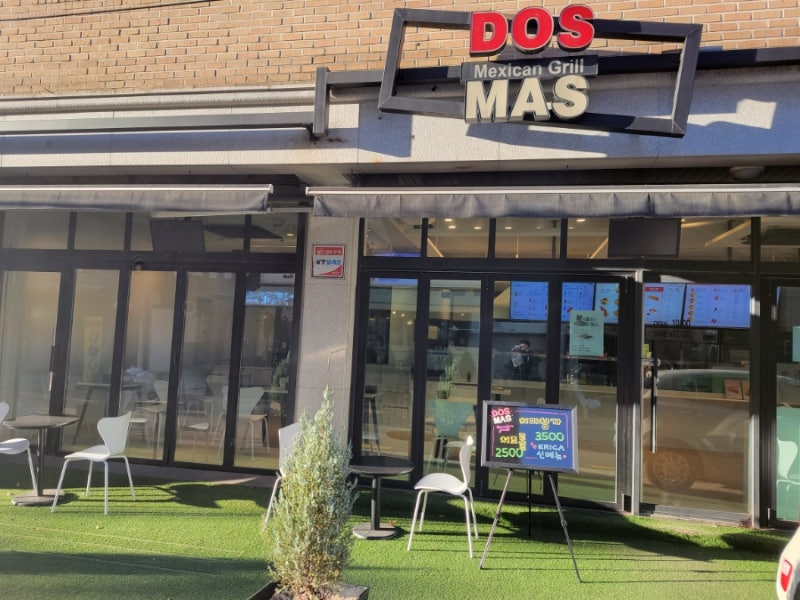
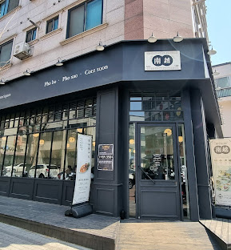
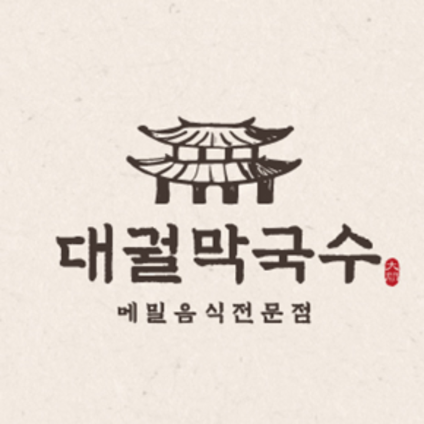

📍 사동 위치
네이버 지도를 기준으로 본 안산시 단원구 사동의 행정구역입니다.

🏞️ 관광지 추천
사동과 가까운 대표 산책 코스와 나들이 장소입니다.
캠퍼스 산책
한양대학교 ERICA 캠퍼스
넓은 잔디광장과 호수, 산책로가 있는 종합 캠퍼스로
봄·가을에는 벚꽃과 단풍을 보러 많은 사람들이 찾습니다.

대표 산책 코스
안산 호수공원
큰 인공 호수를 중심으로 산책로와 자전거 도로가 조성된 공원으로,
아침·저녁 산책과 러닝 코스로 사랑받는 장소입니다.

자연 체험
안산식물원
온실과 야외 정원이 함께 있는 식물원으로,
다양한 식물을 가까이에서 관찰하며 자연을 느낄 수 있는 공간입니다.
🍽️ 맛집 추천
사동 근처에서 학생과 주민들이 자주 찾는 맛집입니다.

멕시칸 음식
도스마스 본점
타코와 부리또 등 멕시칸 메뉴를 즐길 수 있는 캐주얼 다이닝으로,
한양대 ERICA 학생들에게 특히 인기 있는 곳입니다.

베트남 쌀국수
남월 안산한양대 본점
쌀국수와 분짜 등 베트남 요리를 즐길 수 있는 식당으로,
담백한 국물 맛과 넉넉한 양이 장점입니다.

막국수 전문
대궐막국수 안산본점
메밀 막국수와 수육을 함께 즐길 수 있는 한식 맛집으로,
시원한 국물과 쫄깃한 면발이 특징입니다.